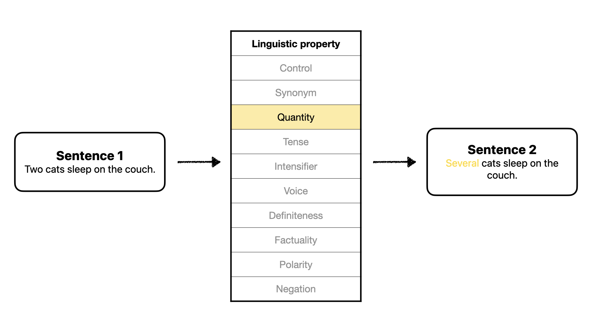
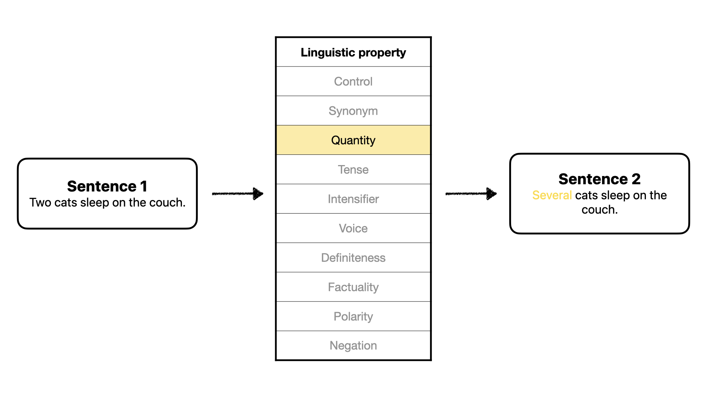
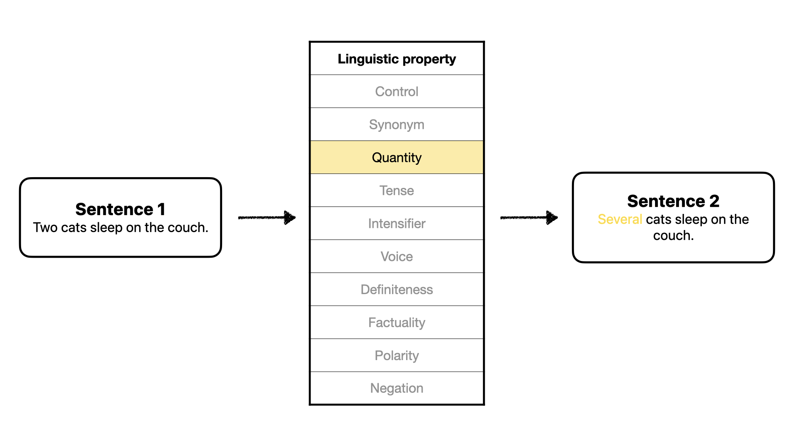

Sentence embeddings, derived from transformer-based models like BERT, encode semantic and syntactic properties into high-dimensional vectors. While these embeddings have revolutionized NLP by enabling tasks like sentiment analysis and paraphrase detection, their interpretability remains a major challenge. Existing research focuses on probing static embeddings to reveal latent properties, but little is understood about how linguistic relationships—such as tense shifts, negation, or synonymy—are dynamically encoded and manipulated in embedding spaces.
Our work addresses this gap by focusing on the generation of embeddings for Sentence 2 from the embedding of Sentence 1, where Sentence 2 represents a linguistically transformed version of Sentence 1. This generative approach allows us to analyze how specific linguistic relationships are encoded as shifts in embedding dimensions and evaluate how well these transformations align with ground-truth embeddings. We move beyond passive probing to actively generating embeddings for relational transformations, offering deeper insights into the inner workings of these models.
This project contributes new knowledge to NLP and deep learning by uncovering the mechanisms underlying relational encoding in embedding spaces. Specifically, we investigate which dimensions encode linguistic relationships, how effectively embeddings can approximate transformations, and whether embedding spaces can be directly manipulated to reflect controlled changes. These findings bridge the gap between interpretability and generative capabilities, providing both theoretical insights and practical tools for embedding manipulation.
The generative approach expands the scope of embedding analysis by revealing how embeddings dynamically encode linguistic transformations, not just whether they capture properties. This has implications for explainable AI, enabling transparent and interpretable manipulations of embeddings to reflect specific linguistic changes. Additionally, generating embeddings for transformations introduces fine-grained control in NLP systems, with applications in controlled text generation, robust paraphrasing, and personalized language tasks. By addressing the underexplored dynamic nature of embeddings, our work provides a foundation for building more robust, interpretable, and actionable embedding-based systems.
Margin note that clarifies some detail #main-content-block for intro section.
Literature Review
Insert content here. Make sure to do in-text citations and link to bib.
Data
LDSPs

Experiments
The task of generating Sentence 2 embeddings based on Sentence 1 embeddings involves modeling the shifts observed in embedding dimensions as they encode linguistic transformations. Two approaches are employed in this project: mean-shift and regression-based transformations. These methods rely on training data (80% of the dataset) to identify patterns and apply those transformations to the test data (remaining 20%).
Mean-shift
The mean-shift approach simplifies the problem by assuming that the transformation for a given linguistic property
can be modeled as a fixed, dimension-specific shift. These shifts are calculated from the training data and then
applied to test data.
Calculating mean shifts
For each dimension \( d \) in the embedding space, the mean shift \( \Delta_d \) is calculated as the difference
between the average value of that dimension for Sentence 2 embeddings and Sentence 1 embeddings in the training data.
\( E_1[i, d] \): Represents the \( d \)-th dimension of the \( i \)-th Sentence 1 embedding.
Embedding for Sentence 1.
\( E_2[i, d] \): Represents the \( d \)-th dimension of the \( i \)-th Sentence 2 embedding.
Embedding for Sentence 2.
\( n \): Number of sentences in the training set.
Number of training examples.
The result is a vector \( \Delta = [\Delta_1, \Delta_2, \dots, \Delta_d] \), where \( d \) is the embedding dimensionality.
Applying mean shifts
To generate the embedding for Sentence 2 during testing, the calculated shifts \( \Delta \) are added to the corresponding
dimensions of the Sentence 1 embedding:
\[
e_2'[d] = e_1[d] + \Delta_d \quad \forall d \in \{1, \dots, D\}
\]
This adjusts Sentence 1 embeddings with the mean shifts.
This method is efficient and captures global trends in dimension shifts, making it particularly useful for transformations
where shifts are consistent across examples.
Logistic Regression
While the mean-shift approach captures global trends, it does not account for variability or nonlinear relationships
within specific dimensions. The regression-based approach overcomes this limitation by learning dimension-specific
logistic regression models to predict changes.
Learning dimension transformations
For each dimension \( d \), a logistic regression model is trained using the \( d \)-th dimension of Sentence 1 embeddings as input
and the corresponding dimension of Sentence 2 embeddings as output:
\[
E_2[i, d] = f_d(E_1[i, d]) + \epsilon
\]
where \( f_d(x) = \frac{1}{1 + e^{-(w_d x + b_d)}} \) is the sigmoid function parameterized by the weight \( w_d \) and bias \( b_d \),
and \( \epsilon \) is the residual error.
The parameters \( w_d \) and \( b_d \) are learned by minimizing the negative log-likelihood (NLL) loss over the training set:


 
